Załącznik powstał na podstawie opracowania Głównego Urzędu Statystycznego Graficzna prezentacja danych statystycznych. Wykresy, mapy, GIS (Warszawa 2014, licencja CC BY 3.0 PL), podrozdział 2.3 „Typy wykresów w statystyce regionalnej”. Wykresy w publikacji wykonano w programie MS Excel na danych do 2013 roku. Poniższe przykłady wykonano w R, a dane pochodzą z Banku Danych Lokalnych GUS (BDL, https://bdl.stat.gov.pl/, licencja CC BY 4.0), według stanu z listopada 2026 roku.
Przy każdym wykresie podano plik danych i zwinięty kod; przycisk „Kod” nad wykresem rozwija go. Gotowe pliki do wykonania wykresów znajdują się w folderze dane/gus/, a opis danych pobranych z BDL zawiera Sekcja B.10. Pakiet waffle instaluje się z serwisu GitHub (Sekcja 1.5). Przed kodem wykresu należy uruchomić poniższy kod.
Kod: pakiety i kolory
library(tidyverse)library(patchwork)library(ggrepel)library(treemapify)library(waffle)kolory_grup <-c("przedprodukcyjny"="#009E73", "produkcyjny"="#D55E00","poprodukcyjny"="#0072B2")kolory_wieku <-c("0-15"="#009E73", "16-19"="#E69F00", "20-64"="#D55E00","65 i więcej"="#0072B2")kolory_kierunku <-c("spadek"="#0072B2", "wzrost"="#D55E00")
B.1 Podział wykresów według celu analizy
Publikacja dzieli wykresy stosowane w badaniach regionalnych według przedmiotu analizy. Podział ten opracowano na podstawie doświadczeń polskiej statystyki publicznej i ma on charakter umowny. Obejmuje sześć rodzajów wykresów z odniesieniem przestrzennym; osobno publikacja omawia wykresy wartości średnich i różnic od średniej.
Celem analizy jest zbadanie różnych cech regionu traktowanego jako odrębna jednostka administracyjna lub społeczno-gospodarcza. Wykresy te stosuje się na różnych poziomach agregacji przestrzennej, często do stworzenia portretu większej jednostki (w Polsce województwa). Publikacja nie podaje przykładów, ponieważ dla jednego regionu stosuje się te same typy wykresów co dla kraju ogółem.
B.3 Wykresy dla różnych podziałów przestrzeni
Wykresy te stosuje się przede wszystkim dla danych, których brak na niższych poziomach agregacji przestrzennej, a które są dostępne jako agregaty dla całego kraju w podziale na typy jednostek. W Polsce jest to podział na miasto i wieś.
B.3.1 Ruch naturalny
Wykres liniowy z zaznaczonym saldem opisuje zmiany zjawiska o charakterze przepływów. Pole między liniami urodzeń i zgonów przedstawia przyrost naturalny, a jego kolor oznacza znak przyrostu.
Linie mogą się przecinać między dwoma latami, dlatego wartości roczne zastępuje gęstsza siatka punktów na osi czasu. Dzięki temu oba pola kończą się dokładnie w punkcie przecięcia.
Kod
ruch_mw <-read.csv("dane/gus/ruch_naturalny_polska.csv", encoding ="UTF-8") |>filter(miejsce !="ogółem")# approx() wyznacza wartości pośrednie na odcinkach między kolejnymi latamisiatka <-seq(min(ruch_mw$rok), max(ruch_mw$rok), by =0.02)pola <- ruch_mw |>group_by(miejsce) |>reframe(rok_siatka = siatka,urodzenia =approx(rok, urodzenia, xout = siatka)$y,zgony =approx(rok, zgony, xout = siatka)$y)# Do linii potrzebna jest tabela w układzie długim: jeden wiersz = jedna wartośćlinie <- ruch_mw |>select(rok, miejsce, urodzenia, zgony) |>pivot_longer(c(urodzenia, zgony), names_to ="zmienna", values_to ="liczba_osob")ggplot() +# pmax() i pmin() ograniczają każde pole do lat z przyrostem o danym znakugeom_ribbon(data = pola, aes(x = rok_siatka, ymin = zgony /1000,ymax =pmax(urodzenia, zgony) /1000, fill ="dodatni")) +geom_ribbon(data = pola, aes(x = rok_siatka, ymin =pmin(urodzenia, zgony) /1000,ymax = zgony /1000, fill ="ujemny")) +geom_line(data = linie, aes(x = rok, y = liczba_osob /1000, linetype = zmienna),linewidth =0.6) +facet_wrap(~ miejsce) +scale_fill_manual(values =c("dodatni"="#F0B37E", "ujemny"="#8FBFDD")) +scale_x_continuous(breaks =seq(2000, 2025, 5)) +expand_limits(y =0) +labs(x ="Rok", y ="Tysiące osób", fill ="Przyrost naturalny", linetype =NULL) +theme_bw(base_size =11) +theme(legend.position ="bottom")
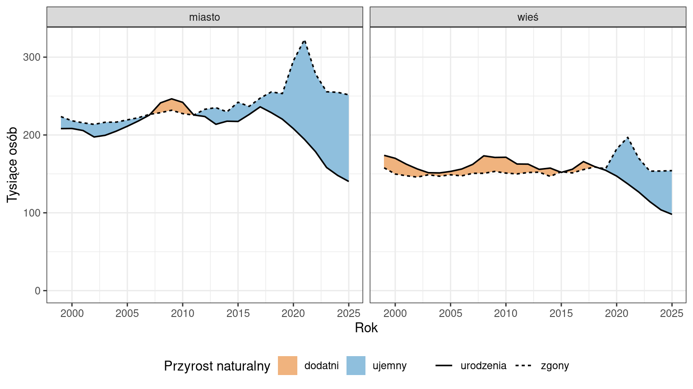
Rycina B.1: Urodzenia żywe, zgony i przyrost naturalny w latach 1999–2025
B.3.2 Struktura wieku ludności miast i wsi
Wykres jest przykładem wykresu słupkowego skumulowanego. Dwa takie wykresy leżą obok siebie, a ich słupki rozchodzą się od wspólnej osi lat. Każdy wykres tworzy się osobno, a pakiet patchwork łączy je w jedną rycinę. Lewy wykres ma odwróconą oś wartości (scale_x_reverse()) i oś lat po prawej stronie. Szerokości wykresów są proporcjonalne do zakresów osi, więc ta sama długość słupka oznacza na obu wykresach tę samą liczbę osób.
grupy_wieku <-read.csv("dane/gus/ludnosc_grupy_wieku_polska.csv",encoding ="UTF-8") |>filter(plec =="ogółem", miejsce !="ogółem") |>mutate(grupa_wieku =factor(grupa_wieku, levels =names(kolory_wieku)),rok =factor(rok),ludnosc_mln = ludnosc /1000000)# Elementy wspólne obu wykresów zapisuje się na liście i dodaje znakiem +wspolne <-list(# reverse = TRUE: najmłodsza grupa znajduje się najbliżej osi latgeom_col(position =position_stack(reverse =TRUE), width =0.85,colour ="white", linewidth =0.15),# 2019 to 17. rok szeregu, więc linia między 2019 a 2020 leży w pozycji 17,5geom_hline(yintercept =17.5, linetype ="dashed"),scale_fill_manual(values = kolory_wieku),labs(x ="Ludność [mln osób]", y =NULL, fill ="Grupa wieku:"),theme_bw(base_size =11))wykres_wies <-ggplot(filter(grupy_wieku, miejsce =="wieś"),aes(x = ludnosc_mln, y = rok, fill = grupa_wieku)) + wspolne +scale_x_reverse(limits =c(16, 0), breaks =seq(0, 15, 5), expand =c(0, 0)) +scale_y_discrete(position ="right") +labs(title ="Wieś")wykres_miasto <-ggplot(filter(grupy_wieku, miejsce =="miasto"),aes(x = ludnosc_mln, y = rok, fill = grupa_wieku)) + wspolne +scale_x_continuous(limits =c(0, 24), breaks =seq(0, 20, 5), expand =c(0, 0)) +labs(title ="Miasto") +# etykiety lat pokazuje wyłącznie lewy wykrestheme(axis.text.y =element_blank(), axis.ticks.y =element_blank())# widths: stosunek szerokości wykresów równy stosunkowi zakresów osi (16 i 24)wykres_wies + wykres_miasto +plot_layout(widths =c(16, 24), guides ="collect") &theme(legend.position ="bottom")
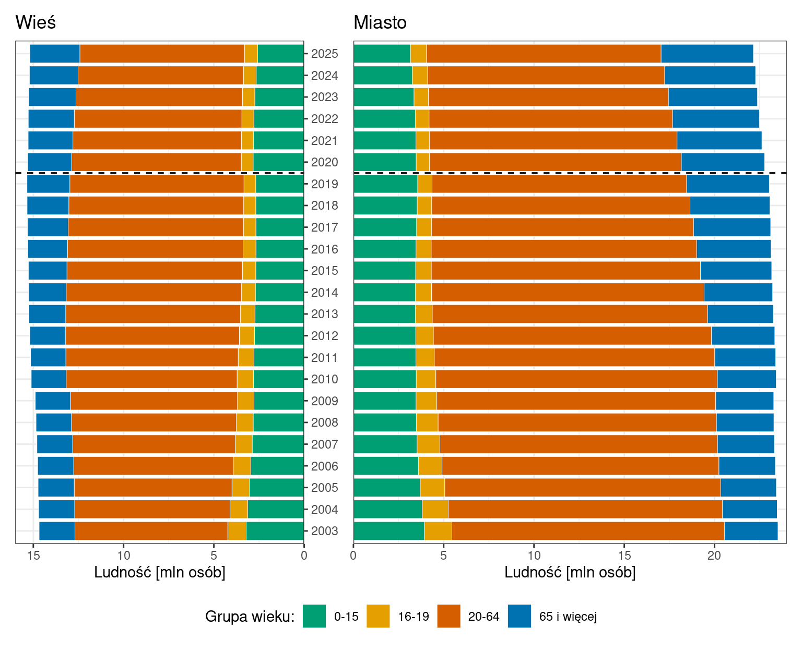
Rycina B.2: Ludność według grup wieku na wsi i w miastach w latach 2003–2025. Linia przerywana oddziela lata sprzed przeliczenia bilansu na bazie NSP 2021
B.4 Porównanie regionu na tle kraju
Wykresy te dotyczą zjawisk w regionie w stosunku do wartości krajowej, a w przypadku jednostek niższego rzędu także regionalnej, oraz skali odchyleń od tej wartości. Publikacja wskazuje jako użyteczne szeregi dynamiczne i strukturalne, na których region i jednostka odniesienia mają odrębne kolory. Przykłady przedstawiają województwo wielkopolskie na tle Polski.
B.4.1 Struktura pracujących
Słupki skumulowane do 100% porównują strukturę pracujących w kraju i w województwie, a panele oddzielają pracujących ogółem od kobiet.
kolory_grup_sekcji <-c("#009E73", "#D55E00", "#0072B2", "#E69F00", "#CC79A7")pracujacy <-read.csv("dane/gus/pracujacy_grupy_sekcji.csv",encoding ="UTF-8", colClasses =c(kod_woj ="character")) |>filter(kod_woj %in%c("00", "30")) |>mutate(# plik zawiera grupy w kolejności sekcji; fct_inorder() zachowuje tę kolejnośćgrupa_sekcji =fct_inorder(str_wrap(grupa_sekcji, width =30)),jednostka =if_else(kod_woj =="00", "Polska", "wielkopolskie"),plec =if_else(plec =="ogółem", "Pracujący ogółem", "W tym kobiety") )ggplot(pracujacy, aes(x = jednostka, y = pracujacy, fill = grupa_sekcji)) +# reverse = TRUE: pierwsza grupa znajduje się na dole słupkageom_col(position =position_fill(reverse =TRUE), width =0.7,colour ="white", linewidth =0.3) +facet_wrap(~ plec) +scale_y_continuous(labels = scales::label_percent()) +scale_fill_manual(values = kolory_grup_sekcji) +# odwrócona legenda: ta sama kolejność co w słupkach, od góry do doługuides(fill =guide_legend(reverse =TRUE)) +labs(x =NULL, y ="Udział w liczbie pracujących", fill =NULL) +theme_bw(base_size =11) +theme(legend.key.spacing.y =unit(4, "pt"))
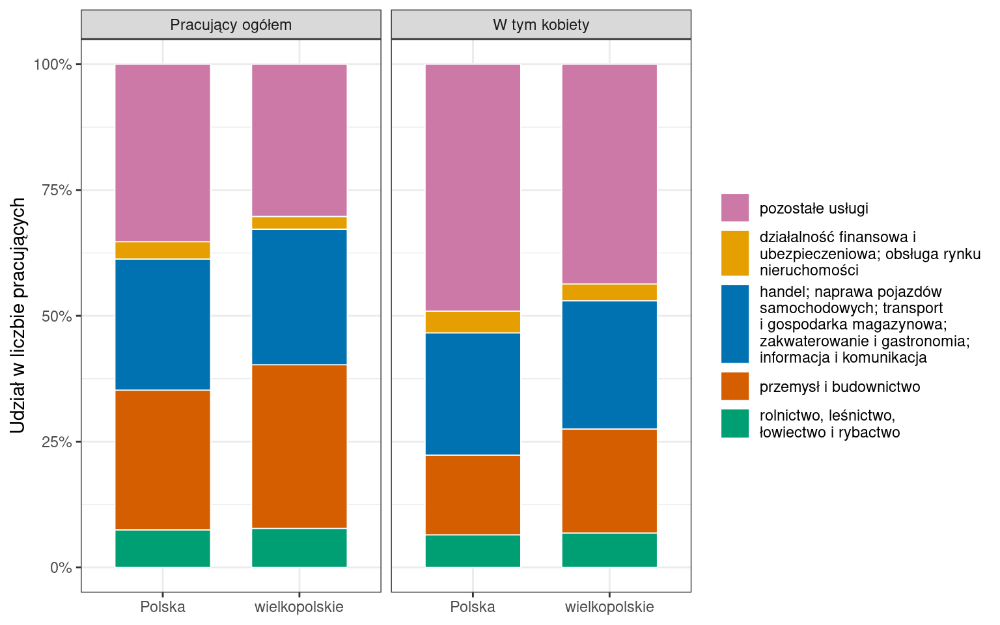
Rycina B.3: Struktura pracujących według grup sekcji PKD na koniec grudnia 2025 roku
B.5 Porównanie regionu z pozostałym terytorium kraju
Wykresy te stosuje się, gdy punktem odniesienia jest kraj z wyłączeniem danego regionu, a nie średnia krajowa, np. stolica i pozostała część kraju albo główne miasto województwa i pozostałe jednostki administracyjne w województwie. Publikacja nie podaje osobnej ryciny: pod względem typów wykresów są one zbliżone do wykresów dla różnych podziałów przestrzeni (Sekcja B.3).
B.6 Porównania międzyregionalne przy małej liczbie jednostek
Wykresy te stosuje się dla jednostek o większej powierzchni, w liczbie nieprzekraczającej zazwyczaj 30, co wynika z konieczności zachowania przejrzystości wykresu. Służą analizie zróżnicowania wewnętrznego przestrzeni kraju (w Polsce na poziomie regionów, województw lub powiatów w ramach województwa) i rankingowaniu regionów. Publikacja przedstawia tu wykresy słupkowe, powierzchniowe i bąbelkowe.
B.6.1 Struktura ludności według ekonomicznych grup wieku
BDL definiuje wiek przedprodukcyjny jako do 17 lat, produkcyjny jako 18–64 lata dla mężczyzn i 18–59 lat dla kobiet, a poprodukcyjny jako 65 lat i więcej dla mężczyzn i 60 lat i więcej dla kobiet. Publikacja dopuszcza porządkowanie elementów według jednego z szeregów: województwa ułożono według udziału ludności w wieku poprodukcyjnym w 2025 roku.
ekon <-read.csv("dane/gus/ludnosc_ekonomiczne_grupy_woj.csv",encoding ="UTF-8") |>filter(plec =="ogółem") |>mutate(grupa =factor(grupa, levels =names(kolory_grup)))# Kolejność województw wyznaczona z 2025 roku obowiązuje na obu wykresachkolejnosc_woj <- ekon |>filter(rok ==2025, grupa =="poprodukcyjny") |>arrange(udzial_proc) |>pull(wojewodztwo)ekon <- ekon |>mutate(wojewodztwo =factor(wojewodztwo, levels = kolejnosc_woj))
Układ statyczny.
Kod
ggplot(filter(ekon, rok ==2025), aes(x = ludnosc, y = wojewodztwo, fill = grupa)) +# position_fill() przelicza każdy słupek na udziały sumujące się do 100%geom_col(position =position_fill(reverse =TRUE), width =0.8,colour ="white", linewidth =0.3) +scale_x_continuous(labels = scales::label_percent()) +scale_fill_manual(values = kolory_grup) +labs(x ="Udział w ludności ogółem", y =NULL, fill ="Ludność w wieku:") +theme_bw(base_size =11) +theme(legend.position ="bottom")
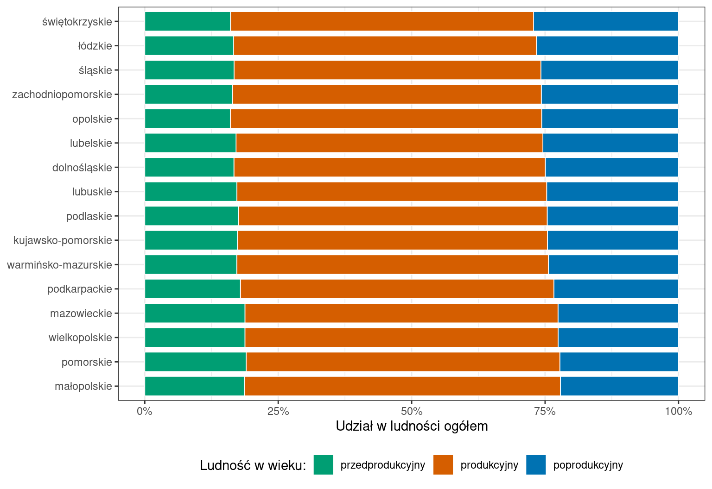
Rycina B.4: Struktura ludności według ekonomicznych grup wieku w województwach w 2025 roku
Układ dynamiczny. Oryginał umieszcza w słupku wąski słupek z wcześniejszego roku. Efekt ten daje druga warstwa geom_col() o mniejszej szerokości i czarnym obrysie.
Kod
ggplot(mapping =aes(x = ludnosc, y = wojewodztwo, fill = grupa)) +geom_col(data =filter(ekon, rok ==2025), position =position_fill(reverse =TRUE),width =0.85) +geom_col(data =filter(ekon, rok ==2010), position =position_fill(reverse =TRUE),width =0.3, colour ="black", linewidth =0.3, show.legend =FALSE) +scale_x_continuous(labels = scales::label_percent()) +scale_fill_manual(values = kolory_grup) +labs(x ="Udział w ludności ogółem", y =NULL, fill ="Ludność w wieku:") +theme_bw(base_size =11) +theme(legend.position ="bottom")
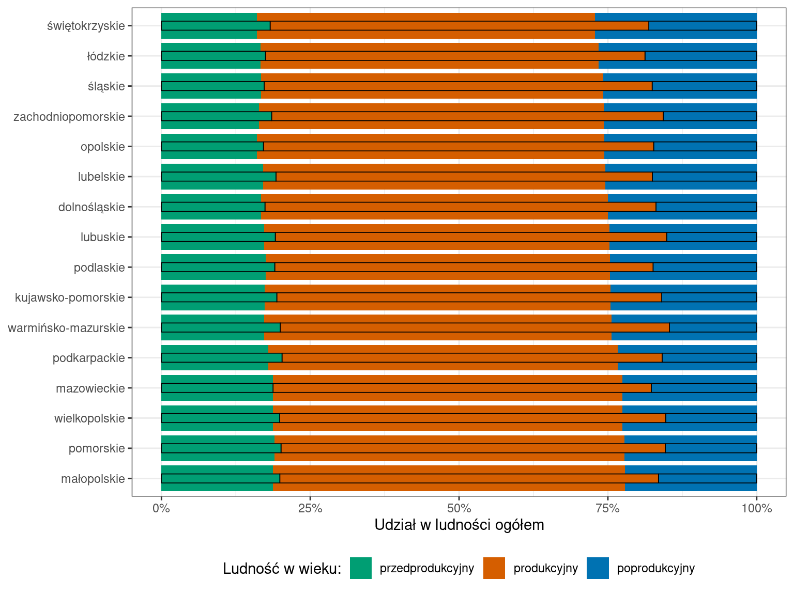
Rycina B.5: Struktura ludności według ekonomicznych grup wieku w województwach: 2025 rok (szerokie słupki) i 2010 rok (wąskie słupki z obrysem)
B.6.2 Udział województw w wartości dodanej brutto
Wykres służy określeniu roli poszczególnych regionów w kształtowaniu zjawiska, czyli porównaniu struktur powstałych na bazie szeregów geograficznych. Panele odpowiadają układowi oryginału: wartość dodana brutto ogółem i w przetwórstwie przemysłowym (sekcja C). Jak w oryginale, każde województwo ma własny kolor, ten sam w obu panelach i na obu wykresach. Przy 16 kategoriach kolor nie wystarcza do jednoznacznego odczytania, dlatego treemap ma podpisy na polach, a wykres typu waffle legendę z pełnymi nazwami.
wdb <-read.csv("dane/gus/wartosc_dodana_woj.csv",encoding ="UTF-8", colClasses =c(kod_woj ="character")) |>filter(rok ==2023, sekcja !="przemysł (B-E)")# Kolor każdego województwa, ten sam na obu wykresachkolory_woj <-tribble(~kod_woj, ~kolor,"14", "#1F78B4", "24", "#E31A1C", "30", "#33A02C", "12", "#FF7F00","02", "#6A3D9A", "10", "#B15928", "22", "#A6CEE3", "04", "#FB9A99","18", "#B2DF8A", "06", "#FDBF6F", "32", "#CAB2D6", "28", "#FFFF99","08", "#17BECF", "20", "#BCBD22", "26", "#999999", "16", "#F781BF") |># kolor podpisu: biały na ciemnym tle, czarny na jasnym (jasność obliczona z RGB)mutate(jasnosc =colSums(col2rgb(kolor) *c(0.299, 0.587, 0.114)),kolor_tekstu =if_else(jasnosc <130, "white", "black"))wdb <-left_join(wdb, kolory_woj, by ="kod_woj")
Treemap. Powierzchnia pola jest proporcjonalna do udziału województwa.
Kod
wdb |># podpis pola: nazwa województwa i udział z przecinkiem dziesiętnymmutate(podpis =str_c(wojewodztwo, "\n",format(round(udzial_proc, 1), decimal.mark =",", trim =TRUE), "%")) |>ggplot(aes(area = wdb_mln_zl, fill = kolor, label = podpis, colour = kolor_tekstu)) +geom_treemap(colour ="white", size =2) +# reflow = TRUE zawija tekst, a size i min.size wyznaczają zakres wielkości podpisugeom_treemap_text(place ="centre", reflow =TRUE, size =10, min.size =3) +facet_wrap(~ sekcja) +# scale_*_identity(): kolumna zawiera gotowe kolory, które wykres stosuje bez zmianscale_fill_identity() +scale_colour_identity() +theme_bw(base_size =11)
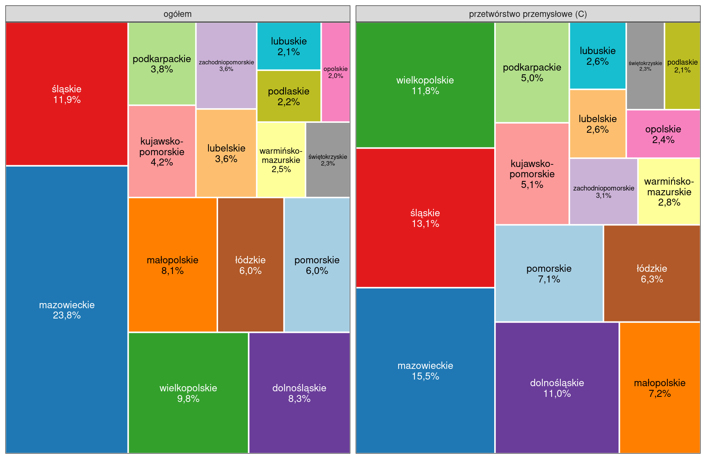
Rycina B.6: Udział województw w tworzeniu wartości dodanej brutto w 2023 roku
Wykres typu waffle. Wariant dodatkowy, spoza publikacji, wymagający opcjonalnego pakietu waffle (Sekcja 1.5), wykonany według przykładów z R Graph Gallery (https://r-graph-gallery.com/waffle.html). Wykres typu waffle (waffle chart) przedstawia całość jako siatkę 100 kwadratów, w której jeden kwadrat odpowiada 1% wartości dodanej brutto. Liczba kwadratów musi być całkowita i sumować się do 100, dlatego udziały zaokrąglono metodą największych reszt: każde województwo otrzymuje część całkowitą udziału, a pozostałe kwadraty trafiają do województw o największej części ułamkowej. Kolejność województw w legendzie i na siatce wyznacza udział w wartości dodanej ogółem. Ta sama kolejność w obu panelach ułatwia porównanie, ale w panelu przetwórstwa przemysłowego nie odpowiada ona malejącym udziałom.
Kod
kwadraty <- wdb |>group_by(sekcja) |>mutate(czesc_calkowita =floor(udzial_proc),reszta = udzial_proc - czesc_calkowita,do_rozdzialu =100-sum(czesc_calkowita),# dodatkowy kwadrat dla województw o największej reszcieliczba_kwadratow = czesc_calkowita + (rank(-reszta, ties.method ="first") <= do_rozdzialu) ) |>ungroup()# Kolejność województw według udziału w wartości dodanej ogółemkolejnosc_woj_wdb <- wdb |>filter(sekcja =="ogółem") |>arrange(desc(udzial_proc))# geom_waffle() wypełnia siatkę w kolejności wierszy tabeli, dlatego tabelę się sortujekwadraty <- kwadraty |>mutate(wojewodztwo =factor(wojewodztwo, levels = kolejnosc_woj_wdb$wojewodztwo)) |>arrange(sekcja, wojewodztwo)ggplot(kwadraty, aes(fill = wojewodztwo, values = liczba_kwadratow)) +# values: liczba kwadratów kategorii, n_rows: liczba wierszy siatkigeom_waffle(n_rows =10, color ="white", size =0.8) +facet_wrap(~ sekcja) +# setNames(): wektor nazwany, który przypisuje kolor do nazwy województwascale_fill_manual(values =setNames(kolejnosc_woj_wdb$kolor, kolejnosc_woj_wdb$wojewodztwo)) +# coord_equal(): kwadraty mają równe bokicoord_equal() +labs(fill =NULL) +theme_void(base_size =11) +# margines po prawej stronie: pełne nazwy w legendzietheme(plot.margin =margin(5, 12, 5, 5))
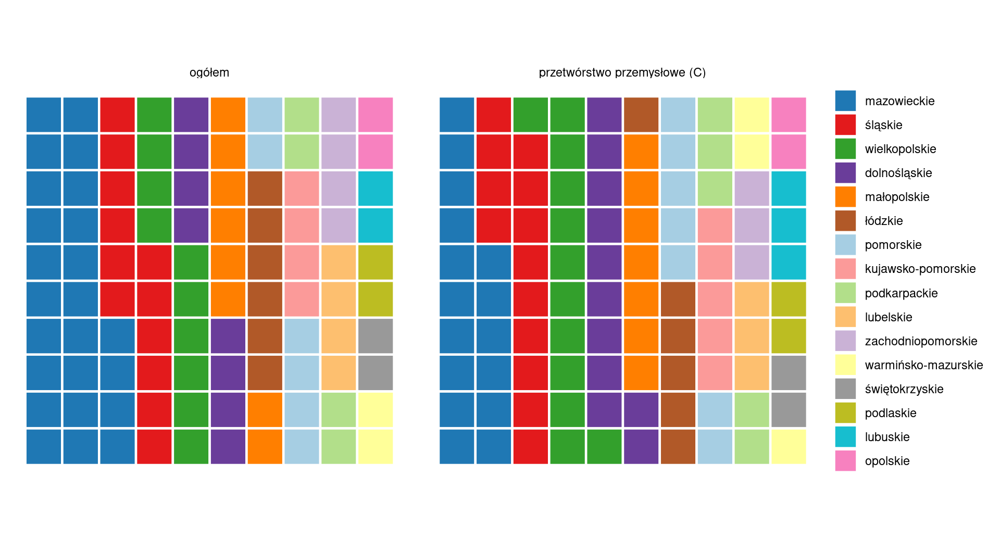
Rycina B.7: Udział województw w tworzeniu wartości dodanej brutto w 2023 roku; jeden kwadrat odpowiada 1%
B.6.3 Działalność badawczo-rozwojowa
Wykres bąbelkowy przedstawia trzy wymiary jednego zjawiska: nakłady na 1 mieszkańca, personel na 1000 osób aktywnych zawodowo i nakłady ogółem. Oryginał wykorzystuje wskaźnik „zatrudnieni w B+R na 1000 osób aktywnych zawodowo”, który BDL podaje do 2015 roku. Od 2016 roku BDL podaje „personel wewnętrzny B+R na 1000 osób aktywnych zawodowo”, w ekwiwalentach pełnego czasu pracy (EPC). Jeden EPC oznacza jeden osobo-rok poświęcony wyłącznie działalności B+R.
Wielkość znaku wyznacza funkcja scale_size_area(): powierzchnia bąbelka jest proporcjonalna do wartości. Etykiety umieszcza funkcja geom_text_repel() tak, aby nie nachodziły na siebie.
Kod
br <-read.csv("dane/gus/dzialalnosc_br_woj.csv",encoding ="UTF-8", colClasses =c(kod_woj ="character")) |>filter(rok ==2024)br_woj <-filter(br, kod_woj !="00")br_polska <-filter(br, kod_woj =="00")wykres_br <-ggplot(br_woj, aes(x = naklady_na_1_mieszkanca_zl, y = personel_na_1000_aktywnych)) +geom_point(aes(size = naklady_mln_zl), shape =21, fill ="#0072B2", colour ="white",alpha =0.7) +# seed: stałe położenie etykiet przy każdym uruchomieniu kodugeom_text_repel(aes(label = jednostka_terytorialna), size =3, seed =1, max.overlaps =Inf) +scale_size_area(max_size =18, breaks =c(1000, 5000, 15000)) +# zakres osi obejmuje także największy bąbelekexpand_limits(x =c(0, 3900), y =c(0, 22)) +labs(x ="Nakłady wewnętrzne na B+R na 1 mieszkańca [zł]",y ="Personel wewnętrzny B+R\nna 1000 osób aktywnych zawodowo [EPC]",size ="Nakłady na B+R\nogółem [mln zł]") +theme_bw(base_size =11)wykres_br
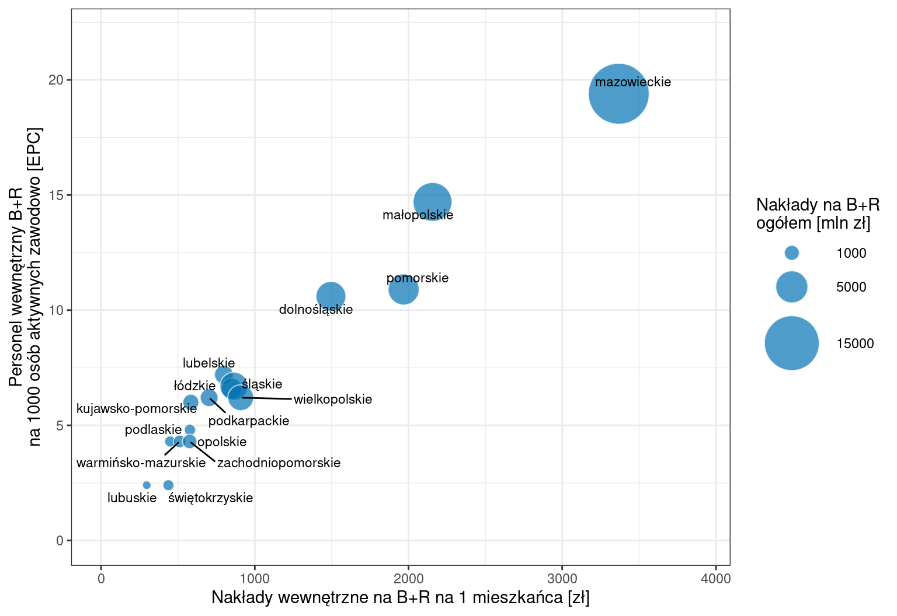
Rycina B.8: Działalność badawczo-rozwojowa w województwach w 2024 roku
B.7 Porównania międzyregionalne przy dużej liczbie jednostek
Wykresy te stosuje się dla jednostek o mniejszej powierzchni, w liczbie przekraczającej około 30 (w Polsce podregiony, powiaty i gminy w całym kraju). Pokazują zróżnicowanie przestrzeni kraju bez identyfikacji poszczególnych jednostek, a ich celem jest obraz ogólnego rozkładu zjawiska i wyodrębnienie prawidłowości. Publikacja wskazuje, że mogą być pomocne w samej analizie danych regionalnych i nie muszą służyć celom publikacyjnym.
B.7.1 Sytuacja demograficzna w podregionach
Wykres bąbelkowy przedstawia cztery zmienne: położenie na osiach, kolor i wielkość znaku. Klasy współczynnika dzietności wyznaczono kwartylami, ponieważ klasy z oryginału (poniżej 1,2; 1,2–1,3; 1,3–1,4; 1,4 i więcej) obejmują w 2025 roku odpowiednio 59, 10, 4 i 0 podregionów. Zamiast prognozowanej zmiany liczby ludności wykres przedstawia zmianę w latach 2015–2025, która obejmuje przeliczenie bilansu na bazie NSP 2021.
podregiony <-read.csv("dane/gus/wskazniki_demograficzne_podregiony.csv",encoding ="UTF-8",colClasses =c(Kod ="character"))# Granice klas: kwartyle dzietności zaokrąglone do dwóch miejsc po przecinkugranice <-quantile(podregiony$dzietnosc, c(0, 0.25, 0.5, 0.75, 1))etykiety <- granice |>round(2) |>format(decimal.mark =",", nsmall =2)podregiony <- podregiony |>mutate(klasa_dzietnosci =cut(dzietnosc, breaks = granice, include.lowest =TRUE,labels =str_c(etykiety[-5], "–", etykiety[-1]))) |># duże znaki rysuje się jako pierwsze, aby nie zasłaniały małycharrange(desc(dzietnosc))ggplot(podregiony, aes(x = przyrost_1000, y = poprodukcyjni_na_100_produkcyjnych,size = klasa_dzietnosci, fill = kierunek_zmiany)) +# shape = 21: punkt z wypełnieniem (fill) i obrysem (colour)geom_point(shape =21, colour ="white", stroke =0.4, alpha =0.85) +scale_size_manual(values =c(2, 3.5, 5.5, 8)) +scale_fill_manual(values = kolory_kierunku) +# podziałki całkowite: etykiety osi bez separatora dziesiętnegoscale_x_continuous(breaks =seq(-10, 0, 2)) +# override.aes zmienia wygląd znaku w legendzie: znaki wielkości otrzymują# wypełnienie szare, a znaki koloru większy rozmiarguides(size =guide_legend(override.aes =list(fill ="grey50")),fill =guide_legend(override.aes =list(size =5))) +labs(x ="Przyrost naturalny na 1000 ludności",y ="Ludność w wieku poprodukcyjnym\nna 100 osób w wieku produkcyjnym",size ="Współczynnik dzietności\n(klasy kwartylowe)",fill ="Zmiana liczby ludności\nw latach 2015–2025") +theme_bw(base_size =11)
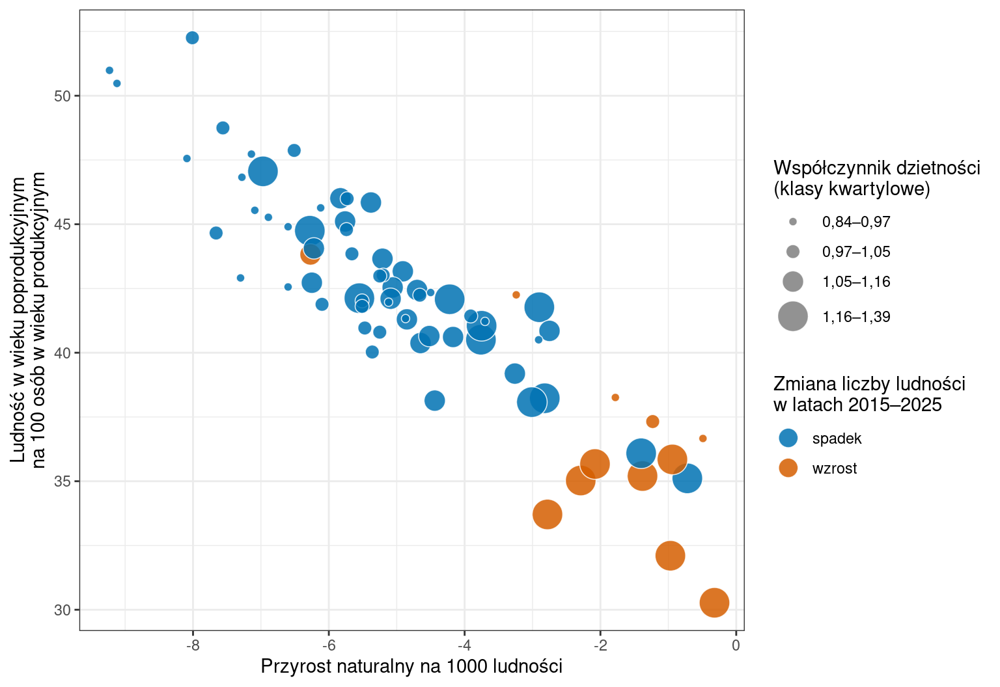
Rycina B.9: Przyrost naturalny, obciążenie demograficzne, współczynnik dzietności i zmiana liczby ludności w 73 podregionach w 2025 roku
B.7.2 Wariant dla powiatów
Współczynnik dzietności BDL podaje do poziomu podregionów, dlatego wykres dla powiatów przedstawia trzy zmienne. Panele oddzielają miasta na prawach powiatu od powiatów ziemskich.
powiaty <-read.csv("dane/gus/wskazniki_demograficzne_powiaty.csv",encoding ="UTF-8", colClasses =c(Kod ="character"))ggplot(powiaty, aes(x = przyrost_1000, y = poprodukcyjni_na_100_produkcyjnych,fill = kierunek_zmiany)) +geom_point(shape =21, colour ="white", stroke =0.3, size =2.2, alpha =0.85) +facet_wrap(~ typ) +scale_fill_manual(values = kolory_kierunku) +guides(fill =guide_legend(override.aes =list(size =4))) +labs(x ="Przyrost naturalny na 1000 ludności",y ="Ludność w wieku poprodukcyjnym\nna 100 osób w wieku produkcyjnym",fill ="Zmiana liczby ludności\nw latach 2015–2025") +theme_bw(base_size =11) +theme(legend.position ="bottom")
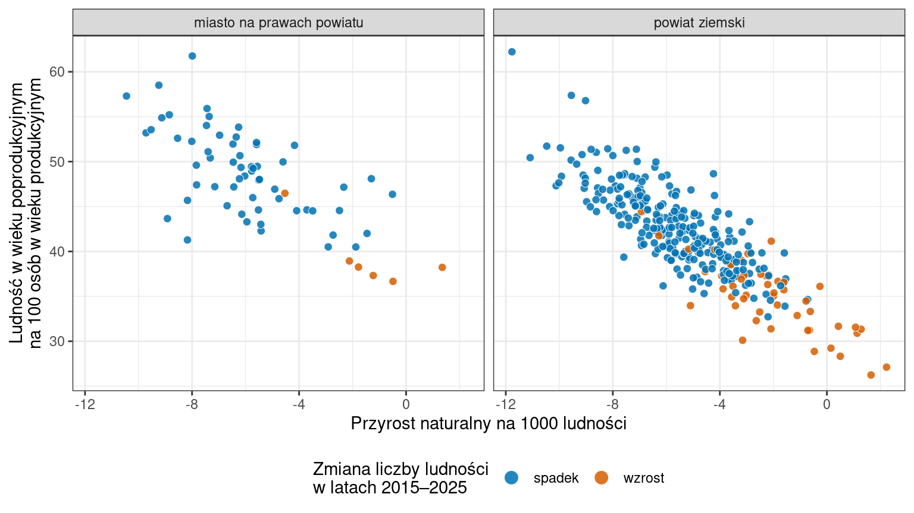
Rycina B.10: Przyrost naturalny, obciążenie demograficzne i zmiana liczby ludności w 380 powiatach w 2025 roku
B.8 Wartości średnie i różnice od średniej
Wartości średnie mogą stanowić dodatkowy element wykresów słupkowych skumulowanych, liniowych i punktowych. Wartość przeciętna zaznaczona linią przecinającą wykres daje obraz rozproszenia wielkości i pokazuje, które z nich są niższe, a które wyższe od średniej. Wykresy tego typu mogą też przedstawiać różnice między wartościami indywidualnymi a wartością przeciętną, a ich uzupełnieniem jest mapa statystyczna.
B.8.1 Działalność badawczo-rozwojowa na tle Polski
Oryginał nazywa linię średnią dla Polski. Plik zawiera wartości BDL dla Polski, dlatego linie przedstawiają te wartości, a nie średnią arytmetyczną z województw. Wykres powstaje z wykresu działalności badawczo-rozwojowej (Sekcja B.6.3, te same dane) przez dodanie warstw do zapisanego obiektu wykres_br.
Rycina B.11: Działalność badawczo-rozwojowa w województwach w 2024 roku na tle wartości dla Polski (linie przerywane)
B.9 Wykres uzupełniający: piramida wieku
Piramida wieku nie występuje w podrozdziale 2.3 publikacji. Jest dwustronnym wykresem słupkowym opisującym strukturę ludności jednej jednostki: mężczyźni znajdują się po lewej stronie osi, a kobiety po prawej. Stronę lewą uzyskuje się przez nadanie mężczyznom wartości ujemnych; funkcja abs() przywraca na osi wartości bezwzględne. Wartości wyrażono jako udział w ludności ogółem.
piramida <-read.csv("dane/gus/piramida_wieku_polska.csv", encoding ="UTF-8") |>filter(rok ==2025) |># plik zawiera grupy w kolejności wieku; fct_inorder() zachowuje tę kolejnośćmutate(grupa_wieku =fct_inorder(grupa_wieku),udzial_wykres =if_else(plec =="mężczyźni", -udzial_proc, udzial_proc))ggplot(piramida, aes(x = udzial_wykres, y = grupa_wieku, fill = plec)) +geom_col(width =0.9) +geom_vline(xintercept =0) +scale_x_continuous(labels = abs, breaks =seq(-4, 4, 1)) +scale_fill_manual(values =c("mężczyźni"="#0072B2", "kobiety"="#D55E00"),breaks =c("mężczyźni", "kobiety")) +labs(x ="mężczyźni ← udział w ludności ogółem [%] → kobiety", y ="Grupa wieku",fill =NULL) +theme_bw(base_size =11)
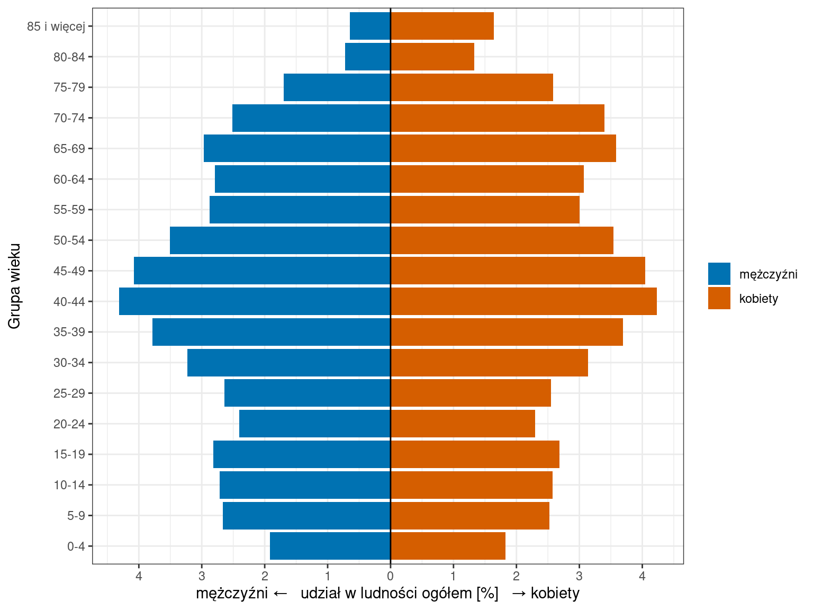
Rycina B.12: Piramida wieku ludności Polski w 2025 roku
B.10 Dane pobrane z BDL
Skrypt zawiera gotowe pliki w folderze dane/gus/, dlatego uruchomienie kodu wykresów nie wymaga pobierania danych. Poniższe opisy wskazują dane potrzebne do odtworzenia lub aktualizacji tych plików.
Każdy zbiór opisano tak, jak w BDL: kategoria, grupa, podgrupa i jej cechy. Zmienne można odnaleźć w witrynie BDL (https://bdl.stat.gov.pl/) w drzewie „Dane” → „Dane wg dziedzin”, przechodząc kolejno przez kategorię, grupę i podgrupę, a następnie zaznaczając wartości cech i lata. Identyfikatory kategorii, grup, podgrup i zmiennych służą do sprawdzenia wyboru, także w zakładce „Metadane”.
Od 2020 roku bilans ludności opiera się na wynikach Narodowego Spisu Powszechnego 2021, a dane od tego roku zostały przeliczone (opis podgrupy w BDL). Porównania lat sprzed i po 2020 roku obejmują więc także tę zmianę podstawy bilansu.
B.10.1 Ruch naturalny
Gotowy plik do wykonania wykresu: dane/gus/ruch_naturalny_polska.csv. Wykres: Sekcja B.3.1.
Układ długi: wiersz odpowiada rokowi i miejscu zamieszkania, a kolumny urodzenia i zgony zawierają liczbę osób. Wykres wykorzystuje wiersze dla miast i wsi.
Dane pobrane z BDL:
Kategoria: K3 LUDNOŚĆ
Grupa: G534 URODZENIA I ZGONY
Podgrupa: Ruch naturalny w podziale na miasto i wieś (id: P3992)
Cechy: Ruch naturalny; Lokalizacje; Rok
Zmienne: identyfikatory w nawiasach; urodzenia żywe ogółem: ogółem (1616435), w miastach (1616436), na wsi (1616437); urodzenia żywe na 1000 ludności: ogółem (1616438), w miastach (1616439), na wsi (1616440); zgony ogółem: ogółem (1616441), w miastach (1616442), na wsi (1616443); zgony na 1000 ludności: ogółem (1616444), w miastach (1616445), na wsi (1616446); przyrost naturalny ogółem: ogółem (1616453), w miastach (1616454), na wsi (1616455); przyrost naturalny na 1000 ludności: ogółem (1616456), w miastach (1616457), na wsi (1616458)
Jednostki i lata: Polska; 1999–2025
Do wykresu wykorzystano: urodzenia żywe ogółem i zgony ogółem, w miastach i na wsi
B.10.2 Struktura wieku ludności miast i wsi
Gotowy plik do wykonania wykresu: dane/gus/ludnosc_grupy_wieku_polska.csv. Wykres: Sekcja B.3.2.
BDL podaje grupy wieku częściowo pokrywające się. Grupa 0–15 jest sumą grup 0–2, 3–6, 7–12 i 13–15, a grupa 20–64 sumą grup 20–24, 25–34, 35–44, 45–54 i 55–64. Grupy 16–19 i 65 lat i więcej pochodzą wprost z BDL. Grupy 0–15 i 16–19 zastępują grupy 0–14 i 15–19 z oryginału, ponieważ BDL podaje je w całym okresie 2003–2025.
Dane pobrane z BDL:
Kategoria: K3 LUDNOŚĆ
Grupa: G7 STAN LUDNOŚCI
Podgrupa: Ludność wg funkcjonalnych grup wieku i płci w podziale na miasto i wieś (id: P3447)
Cechy: Funkcjonalne grupy wieku; Płeć; Lokalizacje; Rok
Zmienne: Funkcjonalne grupy wieku: ogółem, 0-2, 0-14, 3-6, 7-12, 13-15, 15-64, 16-18, 16-19, 19-24, 20-24, 25-34, 35-44, 45-54, 55-64, 65 i więcej; Płeć: ogółem, mężczyźni, kobiety; Lokalizacje: ogółem, w miastach, na wsi (wszystkie 144 zmienne podgrupy)
Jednostki i lata: Polska; 2003–2025
Do wykresu wykorzystano: grupy 0-2, 3-6, 7-12, 13-15, 16-19, 20-24, 25-34, 35-44, 45-54, 55-64, 65 i więcej; płeć ogółem; w miastach, na wsi
B.10.3 Struktura pracujących
Gotowy plik do wykonania wykresu: dane/gus/pracujacy_grupy_sekcji.csv. Wykres: Sekcja B.4.1.
Z pliku wybrano stan na koniec grudnia 2025 roku oraz wiersze dla ogółem i kobiet. Sekcje PKD połączono w grupy jak w oryginale. Eksport BDL nie zawiera wiersza dla Polski, dlatego słupek Polski przedstawia sumę województw. Opis podgrupy wskazuje, że dane nie obejmują pracujących zamieszkałych za granicą.
Dane pobrane z BDL:
Kategoria: K4 RYNEK PRACY
Grupa: G479 PRACUJĄCY, ZATRUDNIENI I PRZECIĘTNE ZATRUDNIENIE WEDŁUG PKD
Podgrupa: Pracujący w gospodarce narodowej wg sekcji PKD, płci i miejsca zamieszkania (dane miesięczne) (id: P4283)
Cechy: Miesiące; Sekcje PKD; Płeć; Rok
Zmienne: Miesiące: styczeń, luty, marzec, kwiecień, maj, czerwiec, lipiec, sierpień, wrzesień, październik, listopad, grudzień; Sekcje PKD: ogółem, rolnictwo, leśnictwo, łowiectwo i rybactwo (A), przemysł razem (B, C, D, E), górnictwo i wydobywanie (B), przemysł - przetwórstwo przemysłowe (C), wytwarzanie i zaopatrywanie w energię elektryczną, gaz, parę wodną i gorącą wodę (D), dostawa wody; gospodarowanie ściekami i odpadami; rekultywacja (E), budownictwo (F), handel; naprawa pojazdów samochodowych (G), transport i gospodarka magazynowa (H), zakwaterowanie i gastronomia (I), informacja i komunikacja (J), działalność finansowa i ubezpieczeniowa (K), obsługa rynku nieruchomości (L), działalność profesjonalna, naukowa i techniczna (M), administrowanie i działalność wspierająca (N), administracja publiczna i obrona narodowa; obowiązkowe zabezpieczenia społeczne (O), edukacja (P), opieka zdrowotna i pomoc społeczna (Q), działalność związana z kulturą, rozrywką i rekreacją (R), pozostała działalność usługowa (S); Płeć: ogółem, mężczyźni, kobiety (wszystkie 756 zmiennych podgrupy)
Jednostki i lata: województwa; 2025
Do wykresu wykorzystano: grudzień; wszystkie sekcje poza „ogółem” i „przemysł razem”; płeć ogółem i kobiety
B.10.4 Struktura ludności według ekonomicznych grup wieku
Gotowy plik do wykonania wykresu: dane/gus/ludnosc_ekonomiczne_grupy_woj.csv. Wykres: Sekcja B.6.1.
Układ długi: wiersz odpowiada województwu, rokowi, płci i grupie wieku. Kolumna udzial_proc zawiera udział grupy w ludności województwa.
Dane pobrane z BDL:
Kategoria: K3 LUDNOŚĆ
Grupa: G7 STAN LUDNOŚCI
Podgrupa: Ludność w wieku przedprodukcyjnym (17 lat i mniej), produkcyjnym i poprodukcyjnym wg płci (id: P1342)
Cechy: Wiek; Płeć; Rok
Zmienne: identyfikatory w nawiasach; ogółem: ogółem (34038), mężczyźni (34039), kobiety (34040); w wieku przedprodukcyjnym: ogółem (149), mężczyźni (150), kobiety (151); w wieku produkcyjnym: ogółem (152), mężczyźni (153), kobiety (154); w wieku poprodukcyjnym: ogółem (155), mężczyźni (156), kobiety (157)
Jednostki i lata: województwa; 1995–2025
Do wykresu wykorzystano: płeć ogółem; lata 2010 i 2025
B.10.5 Udział województw w wartości dodanej brutto
Gotowy plik do wykonania wykresu: dane/gus/wartosc_dodana_woj.csv. Wykres: Sekcja B.6.2.
W eksporcie grupy sekcji mają w 2024 roku wartość 0, a wartość liczbową ma tylko „ogółem”, dlatego zestawienie obejmuje lata 2010–2023. Kolumna udzial_proc zawiera udział województwa w sumie województw dla danej sekcji i roku.
Dane pobrane z BDL:
Kategoria: K29 RACHUNKI REGIONALNE
Grupa: G544 WARTOŚĆ DODANA BRUTTO (CENY BIEŻĄCE) NUTS 2
Podgrupa: Wartość dodana brutto według grup sekcji PKD (id: P3506)
Cechy: Grupy sekcji; Rok
Zmienne: ogółem (id: 1727746); rolnictwo, leśnictwo, łowiectwo i rybactwo (sekcja A) (id: 458316); przemysł i budownictwo (sekcje B,C,D,E,F) (id: 458315); przemysł (sekcje B,C,D,E) (id: 458317); przetwórstwo przemysłowe (sekcja C) (id: 458318); budownictwo (sekcja F) (id: 458319); handel; naprawa pojazdów samochodowych; transport i gospodarka magazynowa; zakwaterowanie i gastronomia; informacja i komunikacja; działalność finansowa i ubezpieczeniowa; obsługa rynku nieruchomości; pozostałe usługi (sekcje G-T) (id: 458314); handel; naprawa pojazdów samochodowych; transport i gospodarka magazynowa; zakwaterowanie i gastronomia; informacja i komunikacja (sekcje G,H,I,J) (id: 458320); działalność finansowa i ubezpieczeniowa; obsługa rynku nieruchomości (sekcje K,L) (id: 458321); pozostałe usługi (sekcje M,N,O,P,Q,R,S,T) (id: 458322)
Jednostki i lata: województwa; 2010–2024
Do wykresu wykorzystano: rok 2023; ogółem i przetwórstwo przemysłowe (sekcja C)
B.10.6 Działalność badawczo-rozwojowa
Gotowy plik do wykonania wykresu: dane/gus/dzialalnosc_br_woj.csv. Wykres: Sekcja B.6.3.
Pliki połączono według jednostki i roku. Wskaźniki zatrudnionych i personelu pozostają w osobnych kolumnach. Wykres wykorzystuje rok 2024.
Dane pobrane z BDL:
Kategoria: K10 NAUKA I TECHNIKA. SPOŁECZEŃSTWO INFORMACYJNE
Grupa: G184 DZIAŁALNOŚĆ BADAWCZA I ROZWOJOWA
Podgrupa: Nakłady wewnętrzne na działalność B+R (id: P2401)
Cechy: Wyszczególnienie; Rok
Zmienne: ogółem (mln zł) (id: 60318); na 1 mieszkańca (id: 60320)
Jednostki i lata: województwa; 2002–2025 (rok 2025 bez wartości)
Do wykresu wykorzystano: rok 2024
Kategoria: K10 NAUKA I TECHNIKA. SPOŁECZEŃSTWO INFORMACYJNE
Grupa: G184 DZIAŁALNOŚĆ BADAWCZA I ROZWOJOWA
Podgrupa: Nakłady wewnętrzne na działalność B+R (id: P2401)
Cechy: Wyszczególnienie; Rok
Zmienne: ogółem (mln zł) (id: 60318); na 1 mieszkańca (id: 60320)
Jednostki i lata: Polska; 2002–2024
Do wykresu wykorzystano: rok 2024
Kategoria: K10 NAUKA I TECHNIKA. SPOŁECZEŃSTWO INFORMACYJNE
Zmienne: personel wewnętrzny B+R na 1000 osób aktywnych zawodowo (id: 565318)
Jednostki i lata: Polska, województwa; 2016–2024
Do wykresu wykorzystano: rok 2024
B.10.7 Sytuacja demograficzna w podregionach
Gotowy plik do wykonania wykresu: dane/gus/wskazniki_demograficzne_podregiony.csv. Wykres: Sekcja B.7.1.
Pliki połączono według kodu podregionu. Obliczono liczbę osób w wieku poprodukcyjnym na 100 osób w wieku produkcyjnym oraz względną zmianę liczby ludności w latach 2015–2025 i jej kierunek. Wartości pozostałych zmiennych dotyczą 2025 roku.
Dane pobrane z BDL:
Kategoria: K3 LUDNOŚĆ
Grupa: G7 STAN LUDNOŚCI
Podgrupa: Ludność w wieku przedprodukcyjnym (17 lat i mniej), produkcyjnym i poprodukcyjnym wg płci (id: P1342)
Cechy: Wiek; Płeć; Rok
Zmienne: ogółem: ogółem (34038); w wieku przedprodukcyjnym: ogółem (149); w wieku produkcyjnym: ogółem (152); w wieku poprodukcyjnym: ogółem (155)
Jednostki i lata: podregiony; 2002–2025
Do wykresu wykorzystano: lata 2015 i 2025
Kategoria: K3 LUDNOŚĆ
Grupa: G534 URODZENIA I ZGONY
Podgrupa: Ruch naturalny w podziale na miasto i wieś (id: P3992)
Cechy: Ruch naturalny; Lokalizacje; Rok
Zmienne: przyrost naturalny na 1000 ludności – ogółem (id: 1616456)
Jednostki i lata: podregiony; 2002–2025
Do wykresu wykorzystano: rok 2025
Kategoria: K3 LUDNOŚĆ
Grupa: G534 URODZENIA I ZGONY
Podgrupa: Współczynnik dzietności i reprodukcji brutto (id: P2346)
Cechy: Współczynniki; Rok
Zmienne: dzietność (id: 59049)
Jednostki i lata: podregiony; 2002–2025
Do wykresu wykorzystano: rok 2025
B.10.8 Wariant dla powiatów
Gotowy plik do wykonania wykresu: dane/gus/wskazniki_demograficzne_powiaty.csv. Wykres: Sekcja B.7.2.
Eksport zawiera 382 wiersze, także jednostki nieistniejące w latach 2015–2025. Zestawienie obejmuje 380 powiatów z kompletem danych, a wskaźniki obliczono jak dla podregionów.
Dane pobrane z BDL:
Kategoria: K3 LUDNOŚĆ
Grupa: G7 STAN LUDNOŚCI
Podgrupa: Ludność w wieku przedprodukcyjnym (17 lat i mniej), produkcyjnym i poprodukcyjnym wg płci (id: P1342)
Cechy: Wiek; Płeć; Rok
Zmienne: ogółem: ogółem (34038); w wieku przedprodukcyjnym: ogółem (149); w wieku produkcyjnym: ogółem (152); w wieku poprodukcyjnym: ogółem (155)
Jednostki i lata: powiaty; 1999–2025
Do wykresu wykorzystano: lata 2015 i 2025
Kategoria: K3 LUDNOŚĆ
Grupa: G534 URODZENIA I ZGONY
Podgrupa: Ruch naturalny w podziale na miasto i wieś (id: P3992)
Cechy: Ruch naturalny; Lokalizacje; Rok
Zmienne: przyrost naturalny na 1000 ludności – ogółem (id: 1616456)
Jednostki i lata: powiaty; 1999–2025
Do wykresu wykorzystano: rok 2025
B.10.9 Piramida wieku
Gotowy plik do wykonania wykresu: dane/gus/piramida_wieku_polska.csv. Wykres: Sekcja B.9.
BDL podaje grupy 70–74, 75–79, 80–84 oraz 85 lat i więcej od 2002 roku, dlatego zestawienie obejmuje lata 2002–2025. Pominięto grupy 0–14 oraz 70 lat i więcej, które pokrywają się z grupami 5-letnimi. Kolumna udzial_proc zawiera udział grupy i płci w ludności ogółem. Wykres wykorzystuje rok 2025.
Dane pobrane z BDL:
Kategoria: K3 LUDNOŚĆ
Grupa: G7 STAN LUDNOŚCI
Podgrupa: Ludność wg grup wieku i płci (id: P2137)